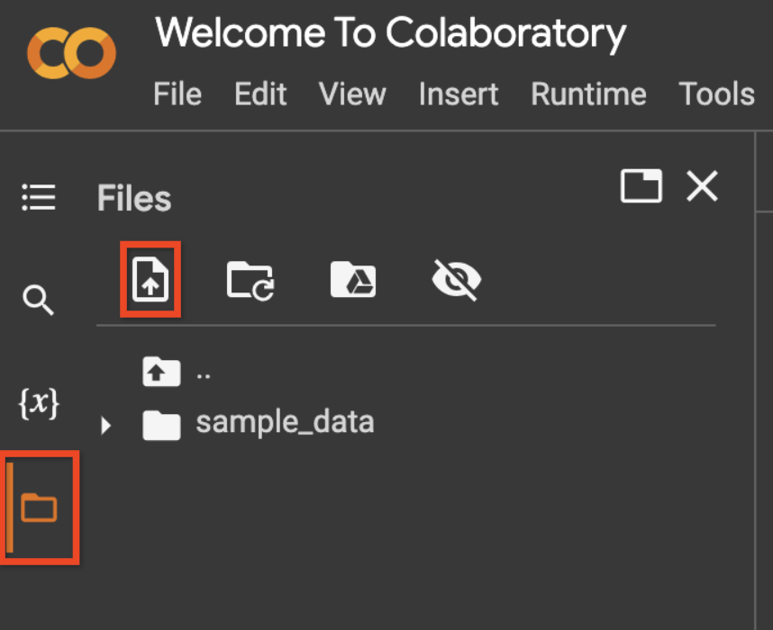

语义检索#
使用Google cloud 需要境外银行卡信息
概述#
大型语言模型 (LLM) 无需直接接受训练即可学习新能力。然而，众所周知，LLM在回答他们未经培训的问题时会产生“幻觉”。部分原因是LLMs不知道训练后发生的事件。追踪LLM的回复来源也非常困难。对于可靠、可扩展的应用程序，LLM提供基于事实的答复并能够引用其信息来源非常重要。
用于克服这些限制的常用方法称为检索增强生成（Retrieval Augmented Generation, RAG），它使用通过信息检索（Information Retrieval ,IR）机制从外部知识库检索的相关数据来增强发送给LLM的提示。知识库可以是您自己的文档、数据库或 API 语料库。
本笔记本将引导您完成一个工作流程，通过使用外部文本语料库增强 LLM 的知识，并使用Generative Language API 的语义检索器和属性问答 (AQA) API 执行语义信息检索来回答问题，从而提高 LLM 的响应能力。
Tip
注意：该API目前处于测试阶段，仅在某些地区可用。
安装#
导入生成语言 API#
# Install the Client library (Semantic Retriever is only supported for versions >0.4.0)
!pip install google.ai.generativelanguage
Requirement already satisfied: google.ai.generativelanguage in /home/st/miniconda3/envs/gemini/lib/python3.10/site-packages (0.4.0)
Requirement already satisfied: google-api-core!=2.0.*,!=2.1.*,!=2.10.*,!=2.2.*,!=2.3.*,!=2.4.*,!=2.5.*,!=2.6.*,!=2.7.*,!=2.8.*,!=2.9.*,<3.0.0dev,>=1.34.0 in /home/st/miniconda3/envs/gemini/lib/python3.10/site-packages (from google-api-core[grpc]!=2.0.*,!=2.1.*,!=2.10.*,!=2.2.*,!=2.3.*,!=2.4.*,!=2.5.*,!=2.6.*,!=2.7.*,!=2.8.*,!=2.9.*,<3.0.0dev,>=1.34.0->google.ai.generativelanguage) (2.15.0)
Requirement already satisfied: proto-plus<2.0.0dev,>=1.22.3 in /home/st/miniconda3/envs/gemini/lib/python3.10/site-packages (from google.ai.generativelanguage) (1.23.0)
Requirement already satisfied: protobuf!=3.20.0,!=3.20.1,!=4.21.0,!=4.21.1,!=4.21.2,!=4.21.3,!=4.21.4,!=4.21.5,<5.0.0dev,>=3.19.5 in /home/st/miniconda3/envs/gemini/lib/python3.10/site-packages (from google.ai.generativelanguage) (4.23.4)
Requirement already satisfied: googleapis-common-protos<2.0.dev0,>=1.56.2 in /home/st/miniconda3/envs/gemini/lib/python3.10/site-packages (from google-api-core!=2.0.*,!=2.1.*,!=2.10.*,!=2.2.*,!=2.3.*,!=2.4.*,!=2.5.*,!=2.6.*,!=2.7.*,!=2.8.*,!=2.9.*,<3.0.0dev,>=1.34.0->google-api-core[grpc]!=2.0.*,!=2.1.*,!=2.10.*,!=2.2.*,!=2.3.*,!=2.4.*,!=2.5.*,!=2.6.*,!=2.7.*,!=2.8.*,!=2.9.*,<3.0.0dev,>=1.34.0->google.ai.generativelanguage) (1.62.0)
Requirement already satisfied: google-auth<3.0.dev0,>=2.14.1 in /home/st/miniconda3/envs/gemini/lib/python3.10/site-packages (from google-api-core!=2.0.*,!=2.1.*,!=2.10.*,!=2.2.*,!=2.3.*,!=2.4.*,!=2.5.*,!=2.6.*,!=2.7.*,!=2.8.*,!=2.9.*,<3.0.0dev,>=1.34.0->google-api-core[grpc]!=2.0.*,!=2.1.*,!=2.10.*,!=2.2.*,!=2.3.*,!=2.4.*,!=2.5.*,!=2.6.*,!=2.7.*,!=2.8.*,!=2.9.*,<3.0.0dev,>=1.34.0->google.ai.generativelanguage) (2.25.2)
Requirement already satisfied: requests<3.0.0.dev0,>=2.18.0 in /home/st/miniconda3/envs/gemini/lib/python3.10/site-packages (from google-api-core!=2.0.*,!=2.1.*,!=2.10.*,!=2.2.*,!=2.3.*,!=2.4.*,!=2.5.*,!=2.6.*,!=2.7.*,!=2.8.*,!=2.9.*,<3.0.0dev,>=1.34.0->google-api-core[grpc]!=2.0.*,!=2.1.*,!=2.10.*,!=2.2.*,!=2.3.*,!=2.4.*,!=2.5.*,!=2.6.*,!=2.7.*,!=2.8.*,!=2.9.*,<3.0.0dev,>=1.34.0->google.ai.generativelanguage) (2.31.0)
Requirement already satisfied: grpcio<2.0dev,>=1.33.2 in /home/st/miniconda3/envs/gemini/lib/python3.10/site-packages (from google-api-core[grpc]!=2.0.*,!=2.1.*,!=2.10.*,!=2.2.*,!=2.3.*,!=2.4.*,!=2.5.*,!=2.6.*,!=2.7.*,!=2.8.*,!=2.9.*,<3.0.0dev,>=1.34.0->google.ai.generativelanguage) (1.60.0)
Requirement already satisfied: grpcio-status<2.0.dev0,>=1.33.2 in /home/st/miniconda3/envs/gemini/lib/python3.10/site-packages (from google-api-core[grpc]!=2.0.*,!=2.1.*,!=2.10.*,!=2.2.*,!=2.3.*,!=2.4.*,!=2.5.*,!=2.6.*,!=2.7.*,!=2.8.*,!=2.9.*,<3.0.0dev,>=1.34.0->google.ai.generativelanguage) (1.60.0)
Requirement already satisfied: cachetools<6.0,>=2.0.0 in /home/st/miniconda3/envs/gemini/lib/python3.10/site-packages (from google-auth<3.0.dev0,>=2.14.1->google-api-core!=2.0.*,!=2.1.*,!=2.10.*,!=2.2.*,!=2.3.*,!=2.4.*,!=2.5.*,!=2.6.*,!=2.7.*,!=2.8.*,!=2.9.*,<3.0.0dev,>=1.34.0->google-api-core[grpc]!=2.0.*,!=2.1.*,!=2.10.*,!=2.2.*,!=2.3.*,!=2.4.*,!=2.5.*,!=2.6.*,!=2.7.*,!=2.8.*,!=2.9.*,<3.0.0dev,>=1.34.0->google.ai.generativelanguage) (5.3.2)
Requirement already satisfied: pyasn1-modules>=0.2.1 in /home/st/miniconda3/envs/gemini/lib/python3.10/site-packages (from google-auth<3.0.dev0,>=2.14.1->google-api-core!=2.0.*,!=2.1.*,!=2.10.*,!=2.2.*,!=2.3.*,!=2.4.*,!=2.5.*,!=2.6.*,!=2.7.*,!=2.8.*,!=2.9.*,<3.0.0dev,>=1.34.0->google-api-core[grpc]!=2.0.*,!=2.1.*,!=2.10.*,!=2.2.*,!=2.3.*,!=2.4.*,!=2.5.*,!=2.6.*,!=2.7.*,!=2.8.*,!=2.9.*,<3.0.0dev,>=1.34.0->google.ai.generativelanguage) (0.3.0)
Requirement already satisfied: rsa<5,>=3.1.4 in /home/st/miniconda3/envs/gemini/lib/python3.10/site-packages (from google-auth<3.0.dev0,>=2.14.1->google-api-core!=2.0.*,!=2.1.*,!=2.10.*,!=2.2.*,!=2.3.*,!=2.4.*,!=2.5.*,!=2.6.*,!=2.7.*,!=2.8.*,!=2.9.*,<3.0.0dev,>=1.34.0->google-api-core[grpc]!=2.0.*,!=2.1.*,!=2.10.*,!=2.2.*,!=2.3.*,!=2.4.*,!=2.5.*,!=2.6.*,!=2.7.*,!=2.8.*,!=2.9.*,<3.0.0dev,>=1.34.0->google.ai.generativelanguage) (4.9)
Requirement already satisfied: charset-normalizer<4,>=2 in /home/st/miniconda3/envs/gemini/lib/python3.10/site-packages (from requests<3.0.0.dev0,>=2.18.0->google-api-core!=2.0.*,!=2.1.*,!=2.10.*,!=2.2.*,!=2.3.*,!=2.4.*,!=2.5.*,!=2.6.*,!=2.7.*,!=2.8.*,!=2.9.*,<3.0.0dev,>=1.34.0->google-api-core[grpc]!=2.0.*,!=2.1.*,!=2.10.*,!=2.2.*,!=2.3.*,!=2.4.*,!=2.5.*,!=2.6.*,!=2.7.*,!=2.8.*,!=2.9.*,<3.0.0dev,>=1.34.0->google.ai.generativelanguage) (3.3.2)
Requirement already satisfied: idna<4,>=2.5 in /home/st/miniconda3/envs/gemini/lib/python3.10/site-packages (from requests<3.0.0.dev0,>=2.18.0->google-api-core!=2.0.*,!=2.1.*,!=2.10.*,!=2.2.*,!=2.3.*,!=2.4.*,!=2.5.*,!=2.6.*,!=2.7.*,!=2.8.*,!=2.9.*,<3.0.0dev,>=1.34.0->google-api-core[grpc]!=2.0.*,!=2.1.*,!=2.10.*,!=2.2.*,!=2.3.*,!=2.4.*,!=2.5.*,!=2.6.*,!=2.7.*,!=2.8.*,!=2.9.*,<3.0.0dev,>=1.34.0->google.ai.generativelanguage) (3.6)
Requirement already satisfied: urllib3<3,>=1.21.1 in /home/st/miniconda3/envs/gemini/lib/python3.10/site-packages (from requests<3.0.0.dev0,>=2.18.0->google-api-core!=2.0.*,!=2.1.*,!=2.10.*,!=2.2.*,!=2.3.*,!=2.4.*,!=2.5.*,!=2.6.*,!=2.7.*,!=2.8.*,!=2.9.*,<3.0.0dev,>=1.34.0->google-api-core[grpc]!=2.0.*,!=2.1.*,!=2.10.*,!=2.2.*,!=2.3.*,!=2.4.*,!=2.5.*,!=2.6.*,!=2.7.*,!=2.8.*,!=2.9.*,<3.0.0dev,>=1.34.0->google.ai.generativelanguage) (1.26.18)
Requirement already satisfied: certifi>=2017.4.17 in /home/st/miniconda3/envs/gemini/lib/python3.10/site-packages (from requests<3.0.0.dev0,>=2.18.0->google-api-core!=2.0.*,!=2.1.*,!=2.10.*,!=2.2.*,!=2.3.*,!=2.4.*,!=2.5.*,!=2.6.*,!=2.7.*,!=2.8.*,!=2.9.*,<3.0.0dev,>=1.34.0->google-api-core[grpc]!=2.0.*,!=2.1.*,!=2.10.*,!=2.2.*,!=2.3.*,!=2.4.*,!=2.5.*,!=2.6.*,!=2.7.*,!=2.8.*,!=2.9.*,<3.0.0dev,>=1.34.0->google.ai.generativelanguage) (2023.11.17)
Requirement already satisfied: pyasn1<0.6.0,>=0.4.6 in /home/st/miniconda3/envs/gemini/lib/python3.10/site-packages (from pyasn1-modules>=0.2.1->google-auth<3.0.dev0,>=2.14.1->google-api-core!=2.0.*,!=2.1.*,!=2.10.*,!=2.2.*,!=2.3.*,!=2.4.*,!=2.5.*,!=2.6.*,!=2.7.*,!=2.8.*,!=2.9.*,<3.0.0dev,>=1.34.0->google-api-core[grpc]!=2.0.*,!=2.1.*,!=2.10.*,!=2.2.*,!=2.3.*,!=2.4.*,!=2.5.*,!=2.6.*,!=2.7.*,!=2.8.*,!=2.9.*,<3.0.0dev,>=1.34.0->google.ai.generativelanguage) (0.5.1)
认证#
Semantic Retriever API 允许您对自己的数据执行语义搜索。由于这是您的数据，因此需要比 API 密钥更严格的访问控制。使用服务帐户或通过您的用户凭据进行OAuth 身份验证。
本快速入门使用适用于测试环境的简化身份验证方法，并且服务帐户设置通常更容易启动。对于生产环境，请先了解身份验证和授权，然后再选择适合您的应用程序的访问凭据。
第一步，启用生成语言 API。
使用服务帐户设置 OAuth#
请按照以下步骤使用服务帐户设置 OAuth：
按照文档创建服务帐户。
创建服务帐户后，生成服务帐户密钥。使用左侧边栏上的文件图标，然后使用上传图标上传您的服务帐户文件，如下面的屏幕截图所示。 
pip install -U google-auth-oauthlib
# Rename the uploaded file to `service_account_key.json` OR
# Change the variable `service_account_file_name` in the code below.
service_account_file_name = 'service_account_key.json'
from google.oauth2 import service_account
credentials = service_account.Credentials.from_service_account_file(service_account_file_name)
scoped_credentials = credentials.with_scopes(
['https://www.googleapis.com/auth/cloud-platform', 'https://www.googleapis.com/auth/generative-language.retriever'])
使用服务帐户凭据初始化客户端库。
import google.ai.generativelanguage as glm
generative_service_client = glm.GenerativeServiceClient(credentials=scoped_credentials)
retriever_service_client = glm.RetrieverServiceClient(credentials=scoped_credentials)
permission_service_client = glm.PermissionServiceClient(credentials=scoped_credentials)
使用用户凭据设置 OAuth#
按照OAuth 快速入门中的以下步骤设置 OAuth 身份验证。
授权桌面应用程序的凭据。要在 Colab 中运行此笔记本，请首先将您的凭证文件（通常是
client_secret_*.json）重命名为client_secret.json。然后使用左侧边栏上的文件图标上传文件，然后使用上传图标上传文件，如下面的屏幕截图所示。
# Replace TODO-your-project-name with the project used in the OAuth Quickstart
project_name = "TODO-your-project-name" # @param {type:"string"}
# Replace TODO-your-email@gmail.com with the email added as a test user in the OAuth Quickstart
email = "TODO-your-email@gmail.com" # @param {type:"string"}
# Rename the uploaded file to `client_secret.json` OR
# Change the variable `client_file_name` in the code below.
client_file_name = "client_secret.json"
# IMPORTANT: Follow the instructions from the output - you must copy the command
# to your terminal and copy the output after authentication back here.
!gcloud config set project $project_name
!gcloud config set account $email
# NOTE: The simplified project setup in this tutorial triggers a "Google hasn't verified this app." dialog.
# This is normal, click "Advanced" -> "Go to [app name] (unsafe)"
!gcloud auth application-default login --no-browser --client-id-file=$client_file_name --scopes="https://www.googleapis.com/auth/generative-language.retriever,https://www.googleapis.com/auth/cloud-platform"
初始化客户端库。
import google.ai.generativelanguage as glm
generative_service_client = glm.GenerativeServiceClient()
retriever_service_client = glm.RetrieverServiceClient()
permission_service_client = glm.PermissionServiceClient()
创建语料库#
Semantic Retriever API 允许您为每个项目定义最多 5 个自定义文本语料库。您可以在定义语料库时指定以下任一字段：
name：语料库资源名称 (ID)。最多只能包含 40 个字母数字字符。如果创建时名称为空，则将生成一个最大长度为 40 个字符的唯一名称，并带有来自 display_name 的前缀和 12 个字符的随机后缀。display_name：语料库的人类可读的显示名称。最多只能包含 128 个字符，包括字母数字、空格和破折号。
example_corpus = glm.Corpus(display_name="Google for Developers Blog")
create_corpus_request = glm.CreateCorpusRequest(corpus=example_corpus)
# Make the request
create_corpus_response = retriever_service_client.create_corpus(create_corpus_request)
# Set the `corpus_resource_name` for subsequent sections.
corpus_resource_name = create_corpus_response.name
print(create_corpus_response)
---------------------------------------------------------------------------
_InactiveRpcError Traceback (most recent call last)
File ~/miniconda3/envs/gemini/lib/python3.10/site-packages/google/api_core/grpc_helpers.py:79, in _wrap_unary_errors.<locals>.error_remapped_callable(*args, **kwargs)
78 try:
---> 79 return callable_(*args, **kwargs)
80 except grpc.RpcError as exc:
File ~/miniconda3/envs/gemini/lib/python3.10/site-packages/grpc/_channel.py:1160, in _UnaryUnaryMultiCallable.__call__(self, request, timeout, metadata, credentials, wait_for_ready, compression)
1154 (
1155 state,
1156 call,
1157 ) = self._blocking(
1158 request, timeout, metadata, credentials, wait_for_ready, compression
1159 )
-> 1160 return _end_unary_response_blocking(state, call, False, None)
File ~/miniconda3/envs/gemini/lib/python3.10/site-packages/grpc/_channel.py:1003, in _end_unary_response_blocking(state, call, with_call, deadline)
1002 else:
-> 1003 raise _InactiveRpcError(state)
_InactiveRpcError: <_InactiveRpcError of RPC that terminated with:
status = StatusCode.PERMISSION_DENIED
details = "Request had insufficient authentication scopes."
debug_error_string = "UNKNOWN:Error received from peer ipv4:142.250.69.202:443 {created_time:"2023-12-22T14:18:46.650890513+08:00", grpc_status:7, grpc_message:"Request had insufficient authentication scopes."}"
>
The above exception was the direct cause of the following exception:
PermissionDenied Traceback (most recent call last)
/home/st/workspace/jupyter_book/tutorial_gemini_api/content_sources/semantic_retriever.ipynb Cell 6 line 5
<a href='vscode-notebook-cell://ssh-remote%2B192.168.6.35/home/st/workspace/jupyter_book/tutorial_gemini_api/content_sources/semantic_retriever.ipynb#W5sdnNjb2RlLXJlbW90ZQ%3D%3D?line=1'>2</a> create_corpus_request = glm.CreateCorpusRequest(corpus=example_corpus)
<a href='vscode-notebook-cell://ssh-remote%2B192.168.6.35/home/st/workspace/jupyter_book/tutorial_gemini_api/content_sources/semantic_retriever.ipynb#W5sdnNjb2RlLXJlbW90ZQ%3D%3D?line=3'>4</a> # Make the request
----> <a href='vscode-notebook-cell://ssh-remote%2B192.168.6.35/home/st/workspace/jupyter_book/tutorial_gemini_api/content_sources/semantic_retriever.ipynb#W5sdnNjb2RlLXJlbW90ZQ%3D%3D?line=4'>5</a> create_corpus_response = retriever_service_client.create_corpus(create_corpus_request)
<a href='vscode-notebook-cell://ssh-remote%2B192.168.6.35/home/st/workspace/jupyter_book/tutorial_gemini_api/content_sources/semantic_retriever.ipynb#W5sdnNjb2RlLXJlbW90ZQ%3D%3D?line=6'>7</a> # Set the `corpus_resource_name` for subsequent sections.
<a href='vscode-notebook-cell://ssh-remote%2B192.168.6.35/home/st/workspace/jupyter_book/tutorial_gemini_api/content_sources/semantic_retriever.ipynb#W5sdnNjb2RlLXJlbW90ZQ%3D%3D?line=7'>8</a> corpus_resource_name = create_corpus_response.name
File ~/miniconda3/envs/gemini/lib/python3.10/site-packages/google/ai/generativelanguage_v1beta/services/retriever_service/client.py:566, in RetrieverServiceClient.create_corpus(self, request, corpus, retry, timeout, metadata)
563 rpc = self._transport._wrapped_methods[self._transport.create_corpus]
565 # Send the request.
--> 566 response = rpc(
567 request,
568 retry=retry,
569 timeout=timeout,
570 metadata=metadata,
571 )
573 # Done; return the response.
574 return response
File ~/miniconda3/envs/gemini/lib/python3.10/site-packages/google/api_core/gapic_v1/method.py:131, in _GapicCallable.__call__(self, timeout, retry, compression, *args, **kwargs)
128 if self._compression is not None:
129 kwargs["compression"] = compression
--> 131 return wrapped_func(*args, **kwargs)
File ~/miniconda3/envs/gemini/lib/python3.10/site-packages/google/api_core/retry.py:372, in Retry.__call__.<locals>.retry_wrapped_func(*args, **kwargs)
368 target = functools.partial(func, *args, **kwargs)
369 sleep_generator = exponential_sleep_generator(
370 self._initial, self._maximum, multiplier=self._multiplier
371 )
--> 372 return retry_target(
373 target,
374 self._predicate,
375 sleep_generator,
376 self._timeout,
377 on_error=on_error,
378 )
File ~/miniconda3/envs/gemini/lib/python3.10/site-packages/google/api_core/retry.py:207, in retry_target(target, predicate, sleep_generator, timeout, on_error, **kwargs)
205 for sleep in sleep_generator:
206 try:
--> 207 result = target()
208 if inspect.isawaitable(result):
209 warnings.warn(_ASYNC_RETRY_WARNING)
File ~/miniconda3/envs/gemini/lib/python3.10/site-packages/google/api_core/timeout.py:120, in TimeToDeadlineTimeout.__call__.<locals>.func_with_timeout(*args, **kwargs)
117 # Avoid setting negative timeout
118 kwargs["timeout"] = max(0, self._timeout - time_since_first_attempt)
--> 120 return func(*args, **kwargs)
File ~/miniconda3/envs/gemini/lib/python3.10/site-packages/google/api_core/grpc_helpers.py:81, in _wrap_unary_errors.<locals>.error_remapped_callable(*args, **kwargs)
79 return callable_(*args, **kwargs)
80 except grpc.RpcError as exc:
---> 81 raise exceptions.from_grpc_error(exc) from exc
PermissionDenied: 403 Request had insufficient authentication scopes. [reason: "ACCESS_TOKEN_SCOPE_INSUFFICIENT"
domain: "googleapis.com"
metadata {
key: "service"
value: "generativelanguage.googleapis.com"
}
metadata {
key: "method"
value: "google.ai.generativelanguage.v1beta.RetrieverService.CreateCorpus"
}
]
获取创建的语料库#
使用GetCorpusRequest方法以编程方式访问您在上面创建的语料库。name参数的值是指语料库的完整资源名称，并在上面的单元格中设置为corpus_resource_name。预期格式为corpora/corpus-123。
get_corpus_request = glm.GetCorpusRequest(name=corpus_resource_name)
# Make the request
get_corpus_response = retriever_service_client.get_corpus(get_corpus_request)
# Print the response
print(get_corpus_response)
创建文档#
一个语料库最多可以包含 10,000 个文档。您可以在定义文档时指定以下任一字段：
name：文档资源名称 (ID)。最多只能包含 40 个字符（仅限字母数字或破折号）。 ID 不能以破折号开头或结尾。如果创建时名称为空，则将从 display_name 派生出一个唯一名称以及 12 个字符的随机后缀。
display_name：人类可读的显示名称。最多只能包含 512 个字符，包括字母数字、空格和破折号。
文档还支持最多 20 个用户指定的custom_metadata字段，指定为键值对。自定义元数据可以是字符串、字符串列表或数字。请注意，字符串列表最多可支持 10 个值，并且数值在API中表示为浮点数。
# Create a document with a custom display name.
example_document = glm.Document(display_name="Introducing Project IDX, An Experiment to Improve Full-stack, Multiplatform App Development")
# Add metadata.
# Metadata also supports numeric values not specified here
document_metadata = [
glm.CustomMetadata(key="url", string_value="https://developers.googleblog.com/2023/08/introducing-project-idx-experiment-to-improve-full-stack-multiplatform-app-development.html")]
example_document.custom_metadata.extend(document_metadata)
# Make the request
# corpus_resource_name is a variable set in the "Create a corpus" section.
create_corpus_request = glm.CreateDocumentRequest(parent=corpus_resource_name, document=example_document)
create_document_response = retriever_service_client.create_document(create_corpus_request)
# Set the `document_resource_name` for subsequent sections.
document_resource_name = create_document_response.name
print(create_document_response)
获取创建的文档#
使用GetDocumentRequest方法以编程方式访问您在上面创建的文档。name参数的值是指文档的完整资源名称，并在上面的单元格中设置为document_resource_name。预期格式为corpora/corpus-123/documents/document-123。
get_document_request = glm.GetDocumentRequest(name=document_resource_name)
# Make the request
# document_resource_name is a variable set in the "Create a document" section.
get_document_response = retriever_service_client.get_document(get_document_request)
# Print the response
print(get_document_response)
摄取并分块文档#
为了提高语义检索期间矢量数据库返回的内容的相关性，请在摄取文档时将大文档分解为较小的片段或块。
Chunk是Document的子部分，出于矢量表示和存储的目的，它被视为独立单元。一个Chunk最多可以有 2043 个tokens。一个语料库最多可以有 100 万个Chunk。
与文档类似，块也支持最多 20 个用户指定的 custom_metadata 字段，指定为键值对。自定义元数据可以是字符串、字符串列表或数字。请注意，字符串列表最多可支持 10 个值，并且数值在 API 中表示为浮点数。
本指南使用 Google 的开源 HtmlChunker
您可以使用的其他分块器包括LangChain或 LlamaIndex。
通过 HtmlChunker 摄取 HTML 和块#
!pip install google-labs-html-chunker
from google_labs_html_chunker.html_chunker import HtmlChunker
from urllib.request import urlopen
获取网站的HTML DOM。在这里，直接读取HTML，但最好让HTML后渲染包含Javascript注入的 HTML，例如document.documentElement.innerHTML
with(urlopen("https://developers.googleblog.com/2023/08/introducing-project-idx-experiment-to-improve-full-stack-multiplatform-app-development.html")) as f:
html = f.read().decode("utf-8")
将文本文档分解为段落并从这些段落创建块。此步骤创建Chunk对象本身，下一部分将它们上传到语义检索器 API。
# Chunk the file using HtmlChunker
chunker = HtmlChunker(
max_words_per_aggregate_passage=200,
greedily_aggregate_sibling_nodes=True,
html_tags_to_exclude={"noscript", "script", "style"},
)
passages = chunker.chunk(html)
print(passages)
# Create `Chunk` entities.
chunks = []
for passage in passages:
chunk = glm.Chunk(data={'string_value': passage})
# Optionally, you can add metadata to a chunk
chunk.custom_metadata.append(glm.CustomMetadata(key="tags",
string_list_value=glm.StringList(
values=["Google For Developers", "Project IDX", "Blog", "Announcement"])))
chunk.custom_metadata.append(glm.CustomMetadata(key="chunking_strategy",
string_value="greedily_aggregate_sibling_nodes"))
chunk.custom_metadata.append(glm.CustomMetadata(key = "publish_date",
numeric_value = 20230808))
chunks.append(chunk)
print(chunks)
批量创建块#
批量创建块。您可以为每个批量请求指定最多 100 个块。
使用CreateChunk()创建单个块。
# Option 1: Use HtmlChunker in the section above.
# `chunks` is the variable set from the section above.
create_chunk_requests = []
for chunk in chunks:
create_chunk_requests.append(glm.CreateChunkRequest(parent=document_resource_name, chunk=chunk))
# Make the request
request = glm.BatchCreateChunksRequest(parent=document_resource_name, requests=create_chunk_requests)
response = retriever_service_client.batch_create_chunks(request)
print(response)
或者，您可以在不使用 HtmlChunker 的情况下创建块。
# Add up to 100 CreateChunk requests per batch request.
# document_resource_name is a variable set in the "Create a document" section.
chunks = []
chunk_1 = glm.Chunk(data={'string_value': "Chunks support user specified metadata."})
chunk_1.custom_metadata.append(glm.CustomMetadata(key="section",
string_value="Custom metadata filters"))
chunk_2 = glm.Chunk(data={'string_value': "The maximum number of metadata supported is 20"})
chunk_2.custom_metadata.append(glm.CustomMetadata(key = "num_keys",
numeric_value = 20))
chunks = [chunk_1, chunk_2]
create_chunk_requests = []
for chunk in chunks:
create_chunk_requests.append(glm.CreateChunkRequest(parent=document_resource_name, chunk=chunk))
# Make the request
request = glm.BatchCreateChunksRequest(parent=document_resource_name, requests=create_chunk_requests)
response = retriever_service_client.batch_create_chunks(request)
print(response)
列出 chunk 并获取状态#
使用ListChunksRequest方法以分页列表的形式获取所有可用的Chunks，每页最大大小限制为 100 个Chunks，按 Chunk.create_time的升序排序。如果不指定限制，则最多返回 10 个chunk。
提供 ListChunksRequest 响应中返回的 next_page_token 作为下一个请求的参数以检索下一页。请注意，分页时，提供给 ListChunks 的所有其他参数必须与提供页面令牌的调用相匹配。
所有块都会返回一个状态。在查询语料库之前，使用它来检查块的状态。块状态包括 -UNSPECIFIED、PENDING_PROCESSING、ACTIVE和FAILED。您只能查询ACTIVE Chunks。
# Make the request
request = glm.ListChunksRequest(parent=document_resource_name)
list_chunks_response = retriever_service_client.list_chunks(request)
for index, chunks in enumerate(list_chunks_response.chunks):
print(f'\nChunk # {index + 1}')
print(f'Resource Name: {chunks.name}')
# Only ACTIVE chunks can be queried.
print(f'State: {glm.Chunk.State(chunks.state).name}')
摄取另一个文档#
通过 HtmlChunker 添加另一个文档并添加过滤器。
# Create a document with a custom display name.
example_document = glm.Document(display_name="How it’s Made: Interacting with Gemini through multimodal prompting")
# Add document metadata.
# Metadata also supports numeric values not specified here
document_metadata = [
glm.CustomMetadata(key="url", string_value="https://developers.googleblog.com/2023/12/how-its-made-gemini-multimodal-prompting.html")]
example_document.custom_metadata.extend(document_metadata)
# Make the CreateDocument request
# corpus_resource_name is a variable set in the "Create a corpus" section.
create_document_request = glm.CreateDocumentRequest(parent=corpus_resource_name, document=example_document)
create_document_response = retriever_service_client.create_document(create_document_request)
# Set the `document_resource_name` for subsequent sections.
document_resource_name = create_document_response.name
print(create_document_response)
# Chunks - add another webpage from Google for Developers
with(urlopen("https://developers.googleblog.com/2023/12/how-its-made-gemini-multimodal-prompting.html")) as f:
html = f.read().decode("utf-8")
# Chunk the file using HtmlChunker
chunker = HtmlChunker(
max_words_per_aggregate_passage=100,
greedily_aggregate_sibling_nodes=False,
)
passages = chunker.chunk(html)
# Create `Chunk` entities.
chunks = []
for passage in passages:
chunk = glm.Chunk(data={'string_value': passage})
chunk.custom_metadata.append(glm.CustomMetadata(key="tags",
string_list_value=glm.StringList(
values=["Google For Developers", "Gemini API", "Blog", "Announcement"])))
chunk.custom_metadata.append(glm.CustomMetadata(key="chunking_strategy",
string_value="no_aggregate_sibling_nodes"))
chunk.custom_metadata.append(glm.CustomMetadata(key = "publish_date",
numeric_value = 20231206))
chunks.append(chunk)
# Make the request
create_chunk_requests = []
for chunk in chunks:
create_chunk_requests.append(glm.CreateChunkRequest(parent=document_resource_name, chunk=chunk))
request = glm.BatchCreateChunksRequest(parent=document_resource_name, requests=create_chunk_requests)
response = retriever_service_client.batch_create_chunks(request)
print(response)
查询语料库#
使用QueryCorpusRequest方法执行语义搜索以获取相关段落。
results_count：指定要返回的段落数。最大值为 100。如果未指定，API 最多返回 10 个块。
metadata_filters：按 chunk_metadata 或 document_metadata 过滤。每个MetadataFilter需要对应一个唯一的key。多个 MetadataFilter 对象通过逻辑 AND 连接。类似的元数据过滤条件通过逻辑 OR 连接。一些例子：
(year >= 2020 OR year < 2010) AND (genre = drama OR genre = action)
metadata_filter = [
{
key = "document.custom_metadata.year"
conditions = [
{int_value = 2020, operation = GREATER_EQUAL},
{int_value = 2010, operation = LESS}]
},
{
key = "document.custom_metadata.genre"
conditions = [
{string_value = "drama", operation = EQUAL},
{string_value = "action", operation = EQUAL} }]
}]
请注意，只有数字值支持同一键的“AND”。字符串值仅支持同一键的“OR”。
# ("Google for Developers" in tags) and (20230314 > publish_date)
metadata_filter = [{
key = "chunk.custom_metadata.tags",
conditions = [
{string_value = 'Google for Developers', operation = INCLUDES},
},{
key = "chunk.custom_metadata.publish_date",
conditions = [
{numeric_value = 20230314, operation = GREATER_EQUAL}]
}]
user_query = "What is the purpose of Project IDX?"
results_count = 5
# Add metadata filters for both chunk and document.
chunk_metadata_filter = glm.MetadataFilter(key='chunk.custom_metadata.tags',
conditions=[glm.Condition(
string_value='Google For Developers',
operation=glm.Condition.Operator.INCLUDES)])
# Make the request
# corpus_resource_name is a variable set in the "Create a corpus" section.
request = glm.QueryCorpusRequest(name=corpus_resource_name,
query=user_query,
results_count=results_count,
metadata_filters=[chunk_metadata_filter])
query_corpus_response = retriever_service_client.query_corpus(request)
print(query_corpus_response)
归因问答#
Attributed Question-Answering, AQA
使用GenerateAnswer 方法对文档、语料库或一组段落执行属性问答。
归因问答 (AQA) 是指回答基于给定上下文的问题并提供归因，同时最大限度地减少幻觉。
在需要 AQA 的情况下，GenerateAnswer 比使用未调整的 LLM 具有多个优势：
底层模型经过训练，只返回基于所提供上下文的答案。
它识别归因（所提供的上下文中对答案有贡献的部分）。归因使用户能够验证答案。
它估计给定（问题、上下文）对的answerable_probability，这进一步使您能够根据返回的答案的合理性和正确性来转移产品行为。
answerable_probability 和“我不知道”问题#
在某些情况下，对这个问题的最佳回答实际上是“我不知道”。例如，如果提供的上下文不包含问题的答案，则该问题被视为“无法回答”。
AQA 模型非常擅长识别此类情况。它甚至可以区分可回答性和不可回答性的程度。
然而，GenerateAnswerAPI 通过以下方式将最终决策权交给您：
始终尝试返回一个有根据的答案 - 即使该答案相对不太可能有根据和正确。
返回值
answerable_probability- 模型对答案有根据且正确的概率的估计。
低answerable_probability可能由以下 1 个或多个因素解释：
该模型不确定其答案是否正确。
该模型不确定其答案是否基于所引用的段落；答案可能是从世界知识中得出的。例如：
问题=“1+1=？”，段落=[“2+2=4”]→答案=2，answerable_probability=0.02该模型提供了并未完全回答问题的相关信息。示例：
question=“我的尺码有吗？”，passages=[“尺码 5-11 有吗”]→answer=“是的，尺码有 5-11”，answerable_probability=0.03”在GenerateAnswerRequest 中没有提出格式正确的问题。
由于较低的answerable_probability表明GenerateAnswerResponse.answer可能是错误的或没有根据的，因此强烈建议通过检查answerable_probability来进一步处理响应。
当answerable_probability较低时，一些客户可能希望：
向最终用户显示一条消息，大意是“我们无法回答该问题”。
回到通用的
LLM，从世界知识中回答问题。此类回退的阈值和性质将取决于各个用例。answerable_probability <= 0.5的值是一个很好的起始阈值。
AQA 有用的提示#
有关完整的 API 规范，请参阅GenerateAnswerRequest API 参考。
段落长度：建议每段最多 300 个令牌。
段落排序：
如果您提供
GenerateAnswerRequest.inline_passages，则应按与查询相关性的降序对段落进行排序。如果超出模型的上下文长度限制，则最后（最不相关）的段落将被省略。如果您提供
GenerateAnswerRequest.semantic_retriever，那么将自动为您完成相关性排序。
局限性：AQA 模型专门用于问答。对于其他用例，例如创意写作、摘要等，请通过GenerateContent调用通用模型。
聊天：如果已知用户输入是可以从特定上下文中回答的问题，则 AQA 可以回答聊天查询。但如果用户输入可能是任何类型的条目，那么通用模型可能是更好的选择。
温度
一般来说，为了获得准确的 AQA，建议使用相对较低的温度 (~0.2)。
如果您的用例依赖于确定性输出，则设置温度=0。
user_query = "What is the purpose of Project IDX?"
answer_style = "ABSTRACTIVE" # Or VERBOSE, EXTRACTIVE
MODEL_NAME = "models/aqa"
# Make the request
# corpus_resource_name is a variable set in the "Create a corpus" section.
content = glm.Content(parts=[glm.Part(text=user_query)])
retriever_config = glm.SemanticRetrieverConfig(source=corpus_resource_name, query=content)
req = glm.GenerateAnswerRequest(model=MODEL_NAME,
contents=[content],
semantic_retriever=retriever_config,
answer_style=answer_style)
aqa_response = generative_service_client.generate_answer(req)
print(aqa_response)
# Get the metadata from the first attributed passages for the source
chunk_resource_name = aqa_response.answer.grounding_attributions[0].source_id.semantic_retriever_chunk.chunk
get_chunk_response = retriever_service_client.get_chunk(name=chunk_resource_name)
print(get_chunk_response)
更多选项：使用内联通道的 AQA#
或者，您可以直接使用 AQA 端点，而无需通过传递 inline_passages 使用语义检索器 API。
user_query = "What is AQA from Google?"
user_query_content = glm.Content(parts=[glm.Part(text=user_query)])
answer_style = "VERBOSE" # or ABSTRACTIVE, EXTRACTIVE
MODEL_NAME = "models/aqa"
# Create the grounding inline passages
grounding_passages = glm.GroundingPassages()
passage_a = glm.Content(parts=[glm.Part(text="Attributed Question and Answering (AQA) refers to answering questions grounded to a given corpus and providing citation")])
grounding_passages.passages.append(glm.GroundingPassage(content=passage_a, id="001"))
passage_b = glm.Content(parts=[glm.Part(text="An LLM is not designed to generate content grounded in a set of passages. Although instructing an LLM to answer questions only based on a set of passages reduces hallucination, hallucination still often occurs when LLMs generate responses unsupported by facts provided by passages")])
grounding_passages.passages.append(glm.GroundingPassage(content=passage_b, id="002"))
passage_c = glm.Content(parts=[glm.Part(text="Hallucination is one of the biggest problems in Large Language Models (LLM) development. Large Language Models (LLMs) could produce responses that are fictitious and incorrect, which significantly impacts the usefulness and trustworthiness of applications built with language models.")])
grounding_passages.passages.append(glm.GroundingPassage(content=passage_c, id="003"))
# Create the request
req = glm.GenerateAnswerRequest(model=MODEL_NAME,
contents=[user_query_content],
inline_passages=grounding_passages,
answer_style=answer_style)
aqa_response = generative_service_client.generate_answer(req)
print(aqa_response)
分享语料库#
您可以选择使用 CreatePermissionRequest API 与其他人共享语料库。 限制条件：
共享有 2 个角色：READER 和 EDITOR
READER可以查询语料库。
EDITOR拥有读者的权限，此外还可以编辑和共享语料库。
通过授予每个人 user_type 读取权限，可以公开语料库。
# Replace your-email@gmail.com with the email added as a test user in the OAuth Quickstart
shared_user_email = "TODO-your-email@gmail.com" # @param {type:"string"}
user_type = "USER"
role = "READER"
# Make the request
# corpus_resource_name is a variable set in the "Create a corpus" section.
request = glm.CreatePermissionRequest(
parent=corpus_resource_name,
permission=glm.Permission(grantee_type=user_type,
email_address=shared_user_email,
role=role))
create_permission_response = permission_service_client.create_permission(request)
print(create_permission_response)
删除语料库#
使用DeleteCorpusRequest删除用户语料库以及所有关联的文档和块。
请注意，如果不指定force=True标志，非空语料库将引发错误。如果设置force=True，则与此Document相关的任何Chunk和对象也将被删除。
如果force=False（默认值）并且文档包含任何块，则将返回FAILED_PRECONDITION错误。
# Set force to False if you don't want to delete non-empty corpora.
req = glm.DeleteCorpusRequest(name=corpus_resource_name, force=True)
delete_corpus_response = retriever_service_client.delete_corpus(req)
print("Successfully deleted corpus: " + corpus_resource_name)
总结和进一步阅读#
本指南介绍了生成语言 API 的语义检索器和属性问答 (AQA) API，并展示了如何使用它对自定义文本数据执行语义信息检索。请注意，此 API 也适用于LlamaIndex数据框架。请参阅LlamaIndex 教程以了解更多信息。
另请参阅API 文档以了解有关其他可用功能的更多信息。